Leaderboard
Avg. H is the mean Hidden-Dependent score over the nine settings; Avg. F the mean Fully Specified score over the six Retail and Banking settings (Pitch has none). Each setting counts once. Retail and Banking scores are accuracy × 100, Pitch the 0–100 rubric score. API cost is the total over the nine settings (serving stream, learning work and held-out test) at official list prices. Click a column to sort; "Per setting" shows all fifteen scores.
Key findings
From the evaluation of five learning harnesses across six models.
Capability is not learning
95.4 vs 14.1Oracle vs. Blind mean Hidden score across the six models: every model can perform the tasks once the policy is disclosed. Yet no learner recovers it reliably: the best pair (Opus 5 + CH) reaches 73.4, and on Retail L3 the best of 28 pairs reaches only 59.6 (median 22.0).
Adaptation is costly
4–101×Inferring a hidden policy costs 4 to 101 times as much as following a disclosed one (Kimi K3: Prime $2,479 vs. Oracle $102). Adaptation can also degrade behavior that needed no learning: averaged over the four open-weight models, every learner loses Fully Specified accuracy against Blind in Retail (98.9 vs. 89.5–95.5).
Exploration is a bottleneck
ρ = 1.00A harness's answer diversity while it is still failing ranks the harnesses exactly as their Hidden reward does (Spearman ρ over five harnesses; 0.75 over 30 harness–domain–tier cells). Prime, CH, RAG, Mem0 and SkillOpt explore in that order (AUC 1.16, 1.02, 0.88, 0.65, 0.51).
Results
Performance, cost, and the cost–performance frontier. Click a figure to enlarge.
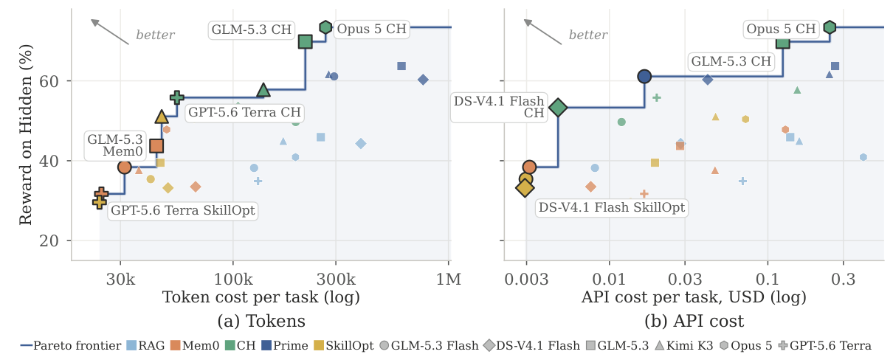
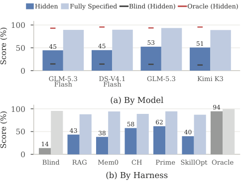
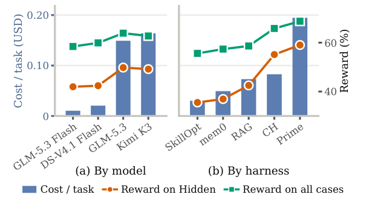
Analysis
How scores come about: how fast a harness picks up a changed policy, what adaptation does to cases that needed no learning, and whether the way a harness explores and retains predicts its reward. The analyses use the recorded serving streams of the four open-weight models and run no new inference.
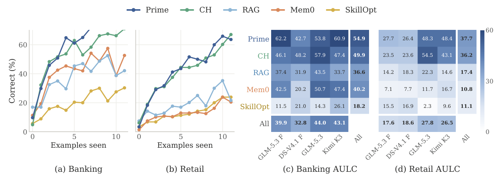
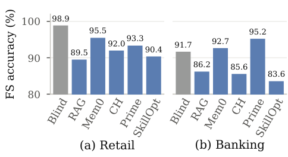
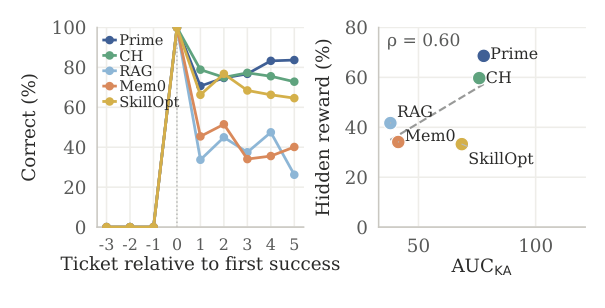
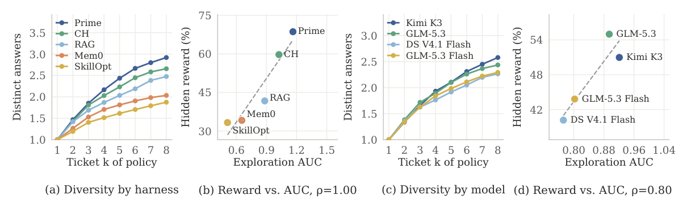
More analyses (appendix figures)
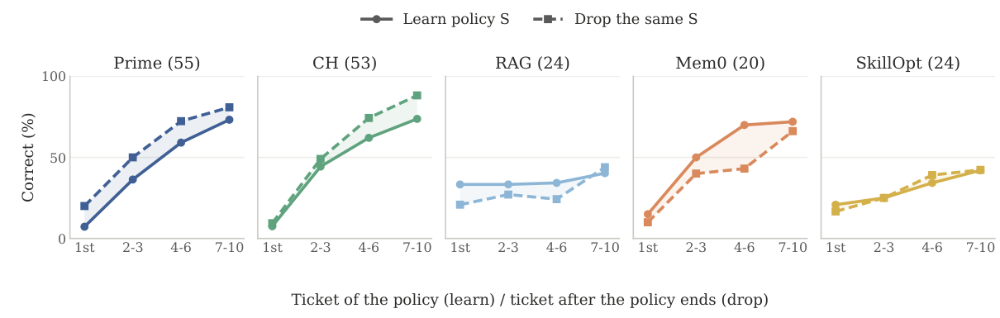
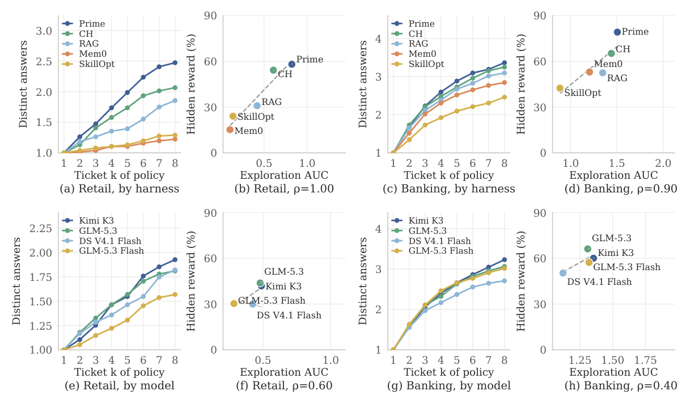
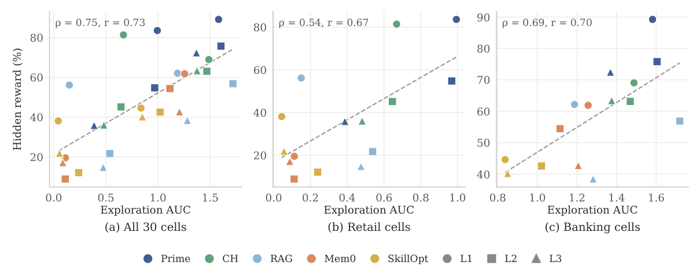
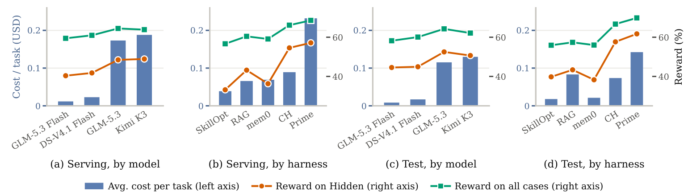
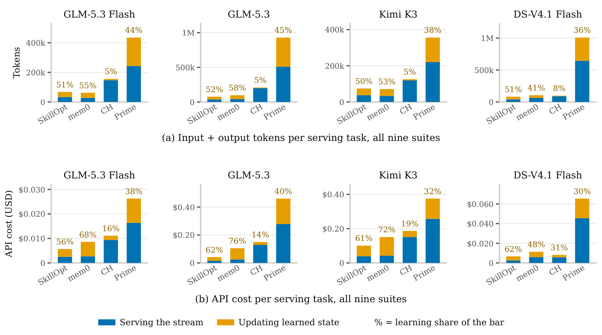
Domains and tiers
Three domains crossed with three difficulty tiers give nine scenarios. Serving and test tasks of a window cover the same active policy components with disjoint instances.
Retail
Multi-turn customer support over a mutable order database: cancel or modify pending orders, return or exchange delivered items. Correct only if the final database state is the intended one, or the request is refused with the right reason code.
tool usecategorical rulesrefusal codesBanking
Case review: authorize card transactions, review credit-limit increases, screen outbound transfers. Harder tiers compose decisions into ranked alternatives and payment batches. Hidden policies are numeric thresholds, caps and corridors.
decision makingnumeric thresholdscompositionPitch
Single-turn generation: write a 40–80 word sales pitch from a factual product sheet. The hidden state is the active customer's taste; a rubric rewards praising liked attributes and penalizes disliked ones, contradictions and invented claims.
open-ended generationlatent preferencesLLM judge| Scenario | Latent structure | Windows | Serving | Test |
|---|---|---|---|---|
| Retail L1 | Categorical rules | 6 | 720 | 384 |
| Retail L2 | Categorical rules | 7 | 810 | 765 |
| Retail L3 | Categorical rules with reversals | 8 | 624 | 537 |
| Banking L1 | Numeric boundaries | 4 | 336 | 178 |
| Banking L2 | Composed numeric boundaries | 5 | 500 | 387 |
| Banking L3 | Numeric boundaries with reversals | 6 | 600 | 551 |
| Pitch L1 | Customer preferences | 4 | 216 | 96 |
| Pitch L2 | Preference drift | 6 | 324 | 144 |
| Pitch L3 | Preferences with reversals | 7 | 378 | 168 |
| Total | 53 | 4,508 | 3,210 |
Difficulty tiers
L1 · acquisition. Previously unseen states, mostly single-policy Retail and Banking requests, non-repeating Pitch profiles.
L2 · revision and composition. Earlier states are revised; multi-policy Retail requests, ranked or batched Banking decisions, recurring Pitch profiles over more attributes.
L3 · non-monotonic evolution. Reversals, removals and re-entry of earlier states on top of L2's composition; Pitch cycles back to earlier profiles.
Protocol
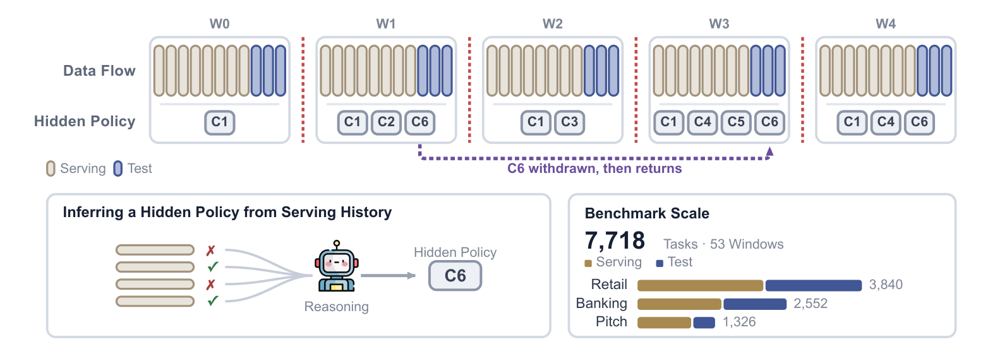
Serving and test
Each environment window places serving tasks, which return a score after the agent acts, before held-out test tasks, which return nothing and never update the learner. The hidden state is fixed within a window and may change only at its boundary.
Hidden-Dependent and Fully Specified
A task is Hidden-Dependent if the visible information alone cannot determine the correct behavior, and Fully Specified otherwise. The goal is to raise Hidden scores without losing Fully Specified ones.
What the learner sees
The task, its own trajectory or response, a scalar score (Score: n/100), a monotonic stream timestamp, and its own persistent state.
Never: the hidden policy, corrections, slice labels, window boundaries or evaluator explanations. Every task is attempted once, within 50 tool calls and 100 turns.
Harnesses
| Blind | Reference. Only learner-visible task information; retains no serving experience. |
| Oracle | Reference. Additionally receives the active hidden policy of each window. |
| RAG | Adds each finished block of twelve served cases, with their score lines, to a BM25 index and retrieves the eight most similar cases into the prompt. No learning-side model calls. |
| Mem0 | Memory layer with its own extraction model: two memory tools during the task, and a post-outcome memory turn after every serving ticket. |
| SkillOpt | Prompt optimizer: each block of twelve serving tickets is one step (six to train, six to select); a candidate skill document replaces the current one only if it passes a strict gate. |
| CH | Continual Harness: tools for memories, skills, subagents and code. The acting agent never sees its score; a Refiner uses it to revise prompt, memories, skills and subagents on a fixed step cadence. |
| Prime | Agent runtime with its own sandbox and code interpreter, a fresh session per ticket, and a post-score turn in which it writes its own memory, skill and prompt files. |
Aggregation
Each model–harness–setting cell yields one score; averages across settings weight every setting equally. Costs are totals over tasks.